Agujeros negros: de la ecuación a la evidencia
Karl Schwarzschild resolvió las ecuaciones de Einstein en 1915 y encontró algo inquietante: una singularidad con un punto de no retorno. Un siglo después sabemos que esos objetos existen, cómo se forman (supernovas), cuántos hay (~100 millones en nuestra galaxia) y cómo delatarse sin emitir luz: acreción, mareas y — al final de la clase — los cuásares, los faros más luminosos del universo.
La clase pasada terminó con el espacio-tiempo curvado y vibrando. Esta clase lo lleva al extremo: ¿qué pasa cuando la materia se concentra demasiado? La respuesta la encontró Karl Schwarzschild jugando con las ecuaciones recién publicadas de Einstein: aparece un radio crítico dentro del cual nada — ni la luz — puede salir. Lo notable es el arco completo de la historia: una solución matemática que parecía una curiosidad terminó siendo un censo de objetos reales, detectables por el brillo del material que devoran o por el caos dinámico que provocan a su alrededor.
Schwarzschild y la singularidad
La primera solución exacta de las ecuaciones de Einstein — y su predicción más extraña.
Karl Schwarzschild (1873–1916) resolvió las ecuaciones de campo de Einstein el mismo año de su publicación, 1915, y fue la primera persona en encontrar que predecían lo que hoy llamamos un agujero negro. Murió al año siguiente en el frente de la Primera Guerra Mundial, no por heridas sino por enfermedad contraída en las condiciones miserables del campo de batalla.
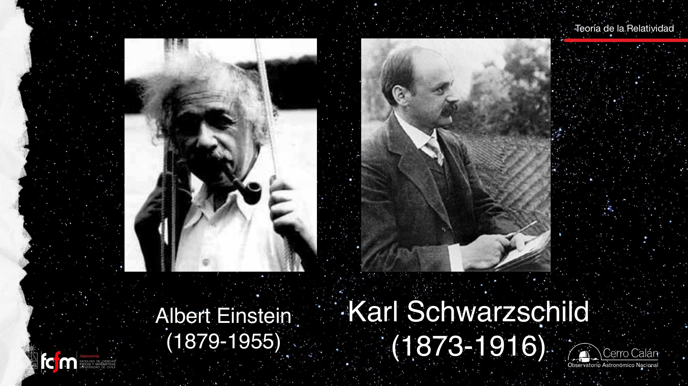
¿Qué encontró? Que si la materia de un cuerpo se concentra lo suficiente, la "malla" del espacio-tiempo no solo se deforma: se perfora. La luz que pasa cerca ya no se desvía y sigue — cae y no vuelve a salir. Matemáticamente el objeto central es una singularidad: algo infinitamente pequeño e infinitamente denso.
No tenemos herramientas físicas para describir el interior de un agujero negro: es un régimen donde haría falta unir gravitación y mecánica cuántica, y esa teoría unificada no existe. Sí tenemos física impecable para las inmediaciones: la relatividad general describe el espacio-tiempo cercano y, hasta ahora, ha pasado todas las pruebas experimentales sin excepción. Nuestro conocimiento del interior es solo la representación matemática; nada puede salir del horizonte para "informarnos" qué hay adentro.
El horizonte de eventos
Una fórmula sorprendentemente simple para el punto de no retorno.
Para un agujero negro que no rota, el horizonte de eventos (también llamado radio de Schwarzschild) se calcula con una ecuación de una línea:
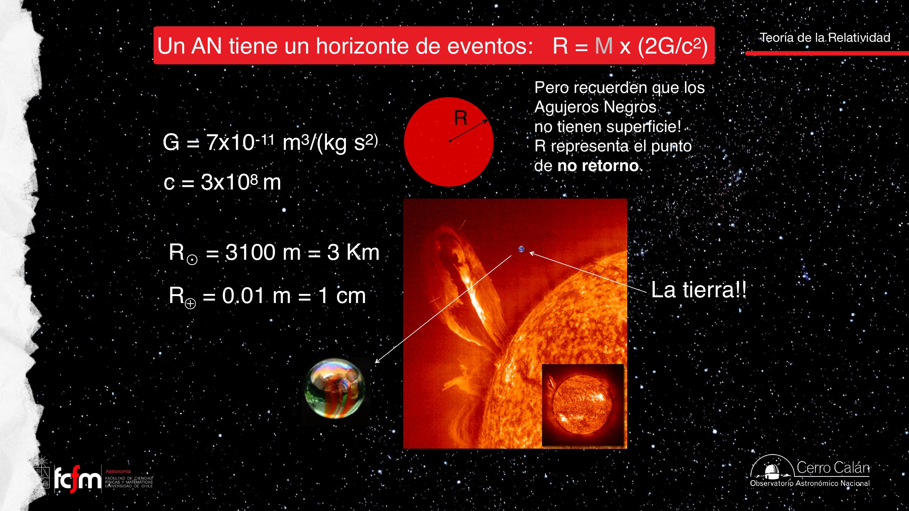
Importante desmitificar: cruzar el horizonte no se siente como atravesar un umbral de película. Es simplemente la distancia a partir de la cual, dinámicamente, ya no existe trayectoria de escape: "por mucho que aprietes los frenos o pongas marcha atrás", harían falta cantidades infinitas de energía. De hecho la suerte se sella antes: existe la ISCO (última órbita circular estable, a 3 veces el radio del horizonte), más allá de la cual toda órbita es inestable y terminas cayendo igual.
"¿Un objeto que cae puede alcanzar la velocidad de la luz?" — No: nada con masa puede llegar a c. Los cuerpos que caen o los agujeros negros a punto de fusionarse alcanzan velocidades cercanas a la de la luz (relativistas), pero nunca la igualan ni la superan.
Lo especial es la compacidad, no la masa
Tres objetos con la misma masa y destinos muy distintos para quien cae.
Un agujero negro no es especial por ser masivo — hay estrellas y galaxias mucho más masivas que un agujero negro estelar. Lo especial es cuán concentrada está esa masa (densidad = masa/volumen). El experimento mental de la clase: tres objetos de 1 masa solar cada uno:
- El Sol (radio 700.000 km): la curvatura lejana es idéntica en los tres casos, pero al caer chocas con la superficie cuando la gravedad aún es "suave".
- Una enana blanca: misma deformación lejana, pero al ser mucho más compacta puedes caer más adentro del pozo de potencial y experimentar gravedad mucho más intensa antes de chocar.
- Un agujero negro: no hay superficie donde chocar; solo el horizonte de 3 km. Caes hasta regiones de gravedad extrema… y desapareces de la vista.
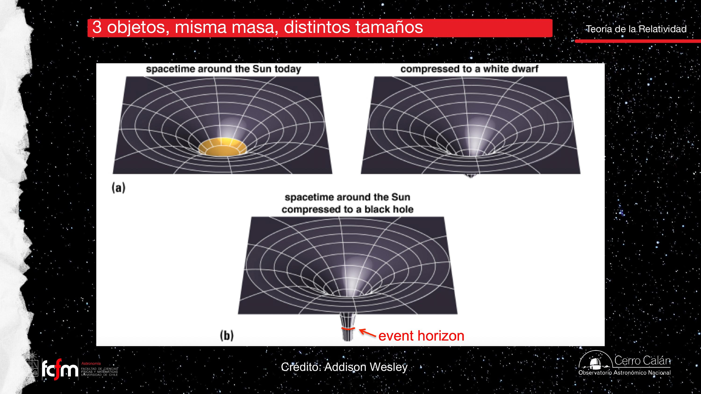
Una estrella de neutrones tiene un radio de pocos kilómetros — parecido al horizonte de un agujero negro de masa similar. Caer hacia una u otro es casi igual de violento; la diferencia final es que en la estrella de neutrones chocas contra una superficie, mientras que en el agujero negro cruzas el horizonte y ni siquiera tu radiación vuelve a salir: "un túnel sin salida". De ahí el nombre agujero negro: ni la luz escapa.
El horizonte funciona como una operación irreversible sin canal de retorno: pasado el commit, no hay rollback ni logs hacia afuera. Toda la información observable hay que capturarla antes del punto de no retorno — igual que la radiación del material que cae, observable solo hasta cruzar el horizonte.
Agujeros de gusano y espaguetificación
No todo lo que sale de las ecuaciones existe en la naturaleza.
Las ecuaciones de Einstein también admiten los agujeros de gusano — en jerga física, el puente de Einstein–Rosen — que conectarían un agujero negro con un "agujero blanco". Es una predicción matemática real, pero jamás se ha observado evidencia de agujeros blancos ni de puentes. Lección de método: a veces uno encuentra soluciones y concluye "esta no es física" — y quedan como material para Hollywood.
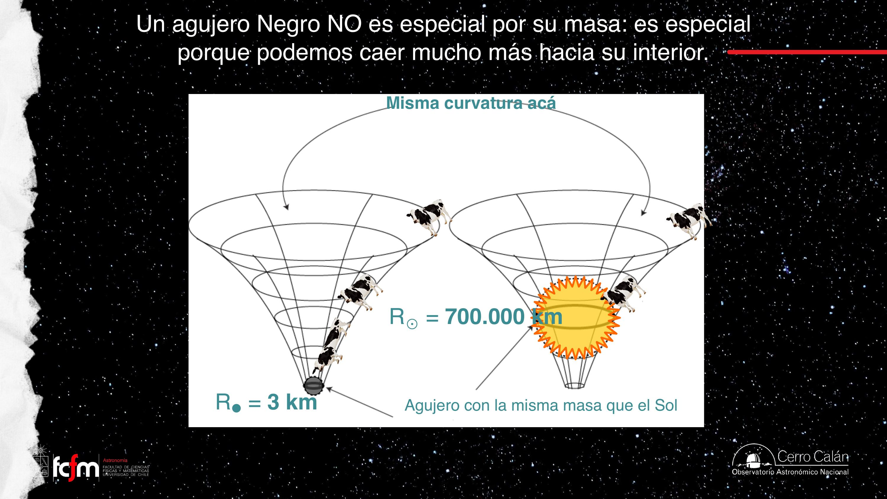
La espaguetificación es el efecto de marea llevado al extremo (los efectos de marea se detallan en la sección 9): las partes del cuerpo más cercanas al agujero son atraídas mucho más fuerte que las lejanas, y el cuerpo se estira hasta romperse. Lo que llega al agujero "en ningún caso es la vaca, sino pedacitos de vaca". Nosotros como observadores dejamos de verla al cruzar el horizonte, pero el material sigue cayendo hasta fusionarse con la singularidad central — así los agujeros negros ganan masa.
Fábricas de agujeros negros: supernovas
De la teoría a los objetos reales: cómo la muerte estelar puebla la galaxia de remanentes.
Una galaxia como la Vía Láctea tiene del orden de 1011 estrellas vivas — y muchas generaciones ya muertas. El tipo de "cadáver" depende de la masa:
- Estrellas tipo Sol: vida larga en secuencia principal → gigante roja → rama asintótica (AGB) → nebulosa planetaria → enana blanca (~0.5 M☉; el Sol devuelve cerca de la mitad de su masa al medio interestelar).
- Estrellas masivas (>10 M☉): vida corta y furiosa (millones de años) → supergigante → supernova → dejan una estrella de neutrones o, las más masivas, un agujero negro.
Estos remanentes ya no son estrellas: no generan energía por fusión nuclear. Contando generaciones pasadas, la Vía Láctea debe albergar ~108 (cien millones) de agujeros negros estelares, muchas más estrellas de neutrones y muchísimas enanas blancas. Solo ~1 de cada 1000 estrellas termina como agujero negro.
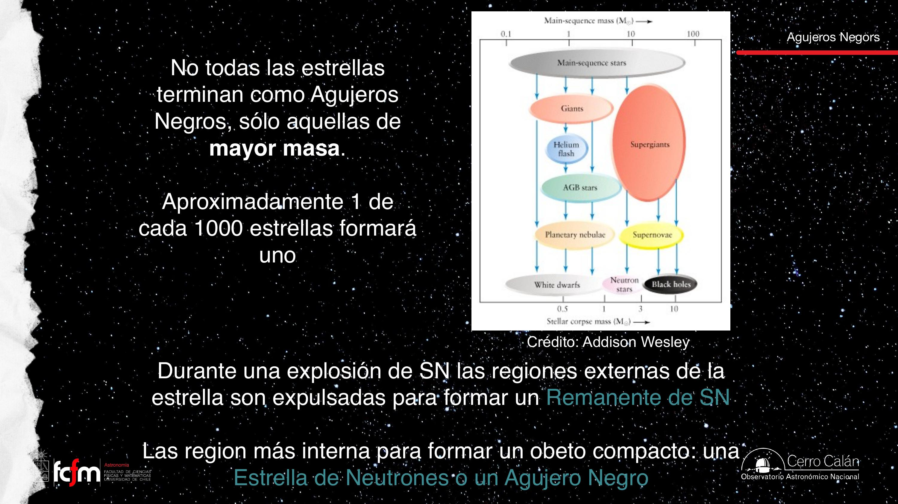
SN 1987A: la supernova de nuestras narices
La supernova cercana más reciente de la era telescópica explotó el 23 de febrero de 1987 en la Nube Grande de Magallanes y fue descubierta desde Chile: un astrónomo observando en Cerro Tololo veía una mancha brillante "que no debía estar", salió del telescopio, miró al cielo… y ahí estaba. Como las Nubes están muy estudiadas, incluso se sabe qué estrella explotó.
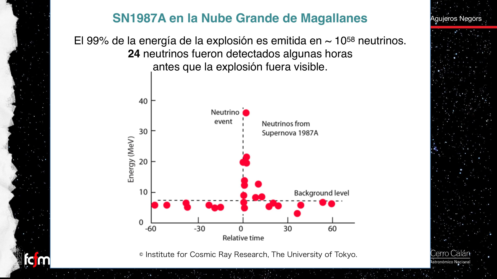
Partículas casi sin masa y sin carga eléctrica: casi no interactúan con nada, por eso atraviesan la estrella en explosión y llegan primero. Que tienen masa (pequeñísima) se confirmó recién hace ~20 años; viajan a velocidades muy cercanas a c.
El Cangrejo, Kepler y la deuda estadística
La supernova de 1054, registrada por astrónomos chinos y árabes, dejó la Nebulosa del Cangrejo: el material eyectado lleva ~1000 años expandiéndose. Por la estadística de estrellas masivas, debería explotar ~1 supernova cada 100 años en la Vía Láctea; la última observada la reportó Kepler en 1604. ¿Estamos "al debe" con 3 o 4? No necesariamente: las supernovas ocurren en el disco galáctico, donde el polvo bloquea nuestra visión — pueden haber explotado sin que nadie las viera.
Eta Carinae: la próxima candidata
Una estrella al borde del estallido, visible desde Chile.
Eta Carinae (η Car), en el hemisferio sur (constelación de Carina, cerca de Canopus), es el mejor candidato a la próxima supernova galáctica: un sistema binario a ~8000 años luz cuya estrella principal tiene ~150 M☉ y una luminosidad de ~5 millones de soles. Su remanente será, con seguridad, un agujero negro.
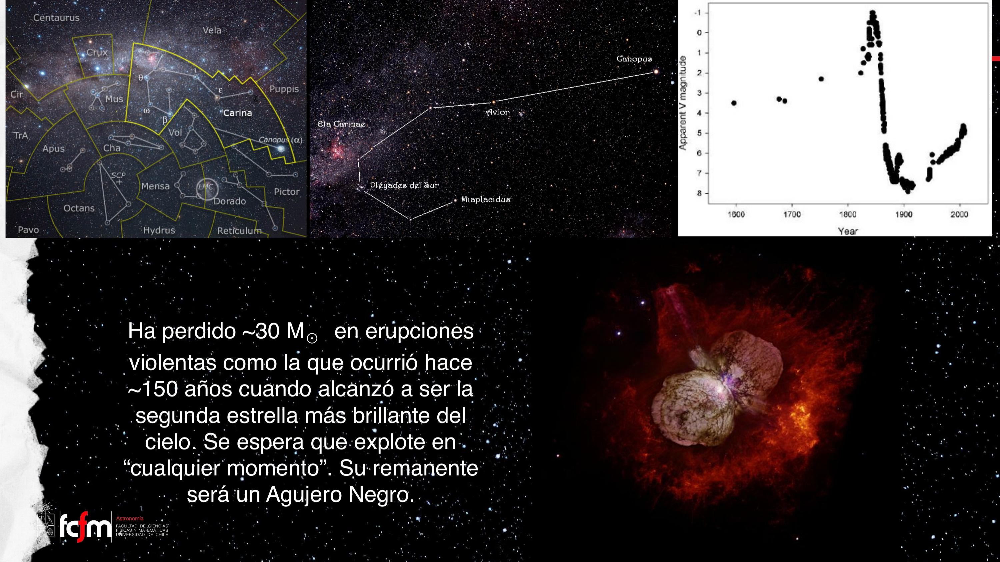
¿Nos mataría una supernova cercana? Probablemente (onda de choque, rayos X), pero las estrellas de masa tan alta son rarísimas — la función inicial de masas dice que por cada estrella masiva se forman decenas de miles de baja masa — y ninguna candidata está lo bastante cerca. Betelgeuse también está lejos. Podemos dormir tranquilos… y pedir de cumpleaños que η Car explote pronto: por unas semanas se podría leer de noche con su luz.
Cómo detectar lo que no brilla
Dos estrategias: mirar lo que cae (acreción) y mirar cómo se mueve lo que orbita (dinámica).
Nada escapa de un agujero negro, así que no podemos observarlo directamente. Las dos vías indirectas:
- Acreción: si hay material cayendo (típicamente gas, no vacas ni pelotas de tenis), forma un remolino — el disco de acreción — donde la fricción interna lo calienta hasta emitir radiación intensa y de alta energía. Un agujero así se dice activo: no vemos el agujero, vemos el gas incandescente que cae.
- Dinámica: aunque nada esté cayendo, estrellas o gas cercanos orbitan con velocidades enormes que delatan la masa invisible; y si se acercan demasiado, los efectos de marea los destruyen.
El gas en el remolino se fricciona consigo mismo y se calienta; la emisión resultante es en gran parte termal (el material tiene temperatura, luego radia — como se vio en el Módulo I, la mayor parte de la radiación del universo es de origen térmico). En la parte interna del disco alrededor de un agujero negro estelar, el gas alcanza temperaturas tan altas que emite en rayos X.
Binarias de rayos X y SS 433
Cómo alimentar un agujero negro estelar: con una estrella compañera muy cercana.
Para que un agujero negro estelar esté activo necesita comida, y la despensa natural es una estrella compañera en órbita muy cercana (las binarias son comunes, y más aún entre estrellas masivas). La historia típica: de las dos estrellas originales, la más masiva evolucionó más rápido y se convirtió en agujero negro; ahora roba masa a su compañera. El material forma un disco de acreción cuya zona interna emite en rayos X: son las binarias de rayos X. Se conocen ~200 en la galaxia — no porque haya solo 200 agujeros negros (hay ~108), sino porque la configuración "compañera lo bastante cerca para alimentarlo" es poco común. El mismo fenómeno ocurre si el objeto compacto es una estrella de neutrones: el material cae igual de profundo y se calienta a temperaturas similares.
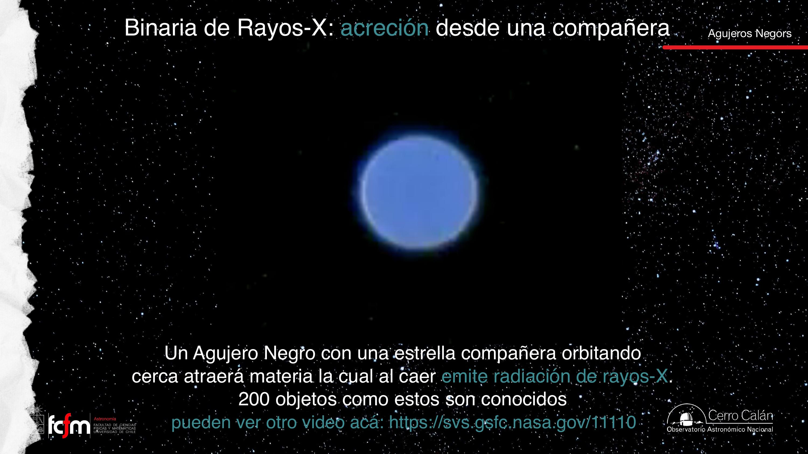
SS 433 y la Nebulosa del Manatí
El sistema SS 433 vive dentro de la Nebulosa del Manatí (que efectivamente parece un manatí, observada en radio). Tiene jets — chorros de partículas ultrarrelativistas expulsados perpendicularmente al disco, con material que viene de las inmediaciones, nunca del interior del agujero. Su gracia: el disco precesa (probablemente por torques de la compañera), así que el jet va cambiando de dirección y el material eyectado dibuja un sacacorchos, mapeado en observaciones de radio a lo largo de ~40 días. A 25 parsecs del agujero, los jets chocan contra el gas del entorno y ese choque se observa en rayos X.
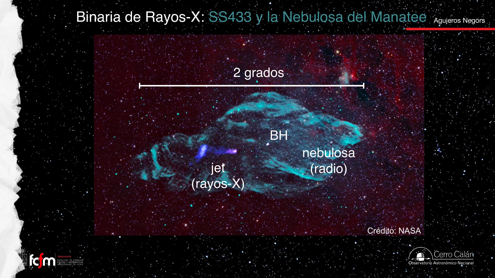
Los jets emiten en todas las longitudes de onda, pero en radio (1) hay pocas otras fuentes que "contaminen" — el cielo queda limpio —, y (2) la interferometría de radio da las mejores resoluciones espaciales. Lo que se ve lejos del agujero en rayos X no es el jet propagándose sino el choque contra gas más denso.
Fuerzas de marea y TDEs
La gravedad diferencial: de las mareas oceánicas a estrellas despedazadas.
El efecto de marea es gravedad diferencial: en un cuerpo extendido, la parte cercana a la masa central es atraída más fuerte que la lejana (en lenguaje newtoniano, con distintos ; en lenguaje relativista, los pies están en espacio más curvado que la cabeza). El resultado: el cuerpo se estira "como un chicle". Las mareas oceánicas son exactamente esto (Sol y Luna tirando de la Tierra — hasta la corteza terrestre se deforma fracciones de centímetro). La resistencia interna del cuerpo (electromagnética: tejidos, redes cristalinas) lucha contra la marea… hasta que pierde.
- Cometa Shoemaker–Levy 9 (1994): al pasar cerca de Júpiter las mareas lo partieron en pedazos alineados "en fila india", que luego impactaron el planeta uno tras otro.
- Nubes de Magallanes: observadas en la línea de 21 cm del hidrógeno neutro, muestran colas de marea y un puente de gas entre ambas — el rastro gravitacional de su interacción con la Vía Láctea, extendido ~160 grados en el cielo.
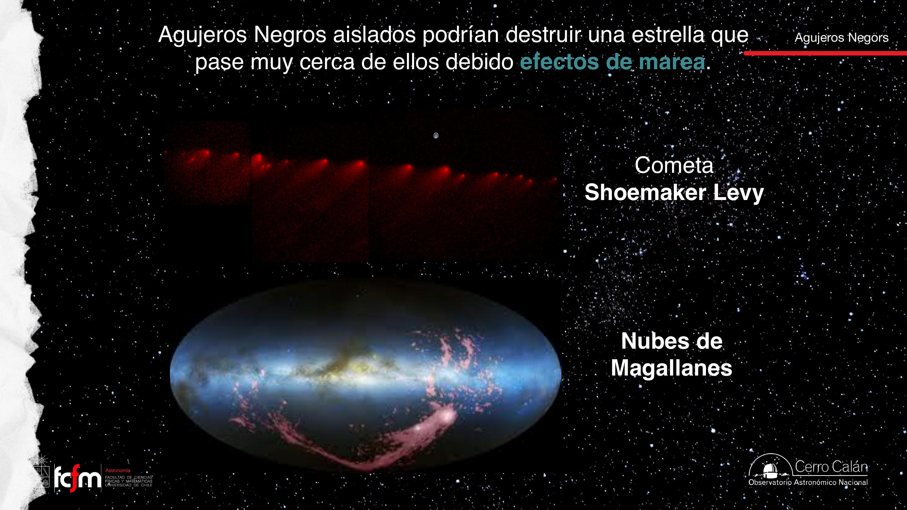
Tidal Disruption Events (TDE)
Un TDE es una estrella que pasa demasiado cerca de un agujero negro — sin ser su compañera — y las mareas la despedazan. El material forma por semanas o meses una estructura tipo disco (inestable, transitoria) que alimenta brevemente al agujero: un destello que delata agujeros negros aislados que de otro modo serían invisibles. Es un área de estudio en plena expansión.
Los cuásares y el argumento c·Δt
Estrellas que no eran estrellas: el descubrimiento de los agujeros negros supermasivos activos.
Además de los agujeros negros estelares existen los supermasivos (SMBH): desde ~106 hasta ~1010 masas solares, ubicados — hasta donde sabemos — siempre en los núcleos de las galaxias. Cuando uno está activo (acretando) se le llama núcleo galáctico activo, AGN (el tema de investigación de la profesora).
Historia: los quasi-stellar radio sources
En los años 40–60, con la radioastronomía potenciada por la tecnología de posguerra, aparecieron fuentes que parecían estrellas pero emitían fuertemente en radio — imposible para una estrella, que por su temperatura solo emite entre el ultravioleta y el infrarrojo cercano. Se las bautizó quasi-stellar radio sources → quásar. Sus espectros eran incomprensibles: líneas de emisión (no de absorción como las estrellas), anchísimas, sobre un continuo muy azul, y que no calzaban con ningún elemento conocido.
En 1963, Maarten Schmidt resolvió el rompecabezas: las líneas de 3C 273 eran simplemente la serie del hidrógeno (Hα, Hβ, Hγ…) corridas por un redshift de z ≈ 0.158. Conclusión demoledora: no era una estrella sino un objeto extragaláctico y lejanísimo, con una luminosidad ~10 veces la de nuestra galaxia entera — tan brillante que opaca por completo a la galaxia que lo alberga.
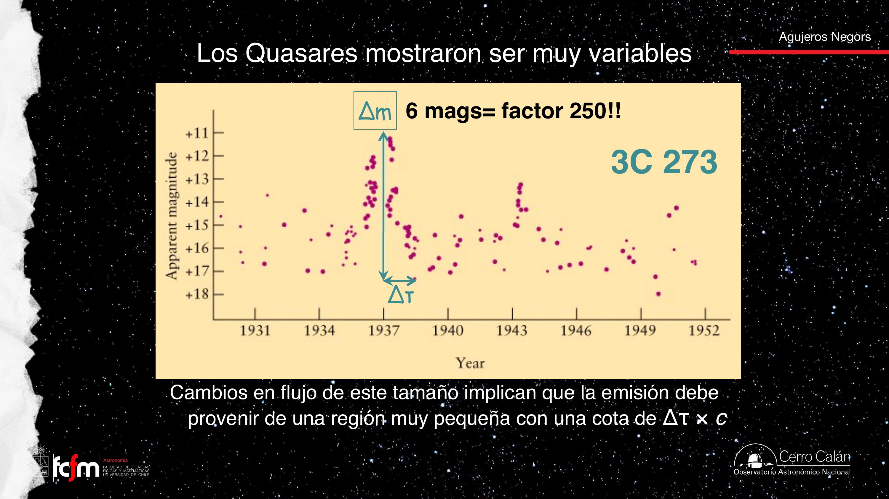
El argumento de causalidad
La variabilidad rápida acota el tamaño del emisor. La idea: un cambio global de brillo debe propagarse por la fuente (una casa no se incendia entera instantáneamente; hasta una explosión empieza en un punto), y nada se propaga más rápido que la luz. Entonces:
El veredicto: algo del tamaño de un sistema planetario que brilla como 10 galaxias juntas. El único mecanismo conocido capaz de esa eficiencia es la acreción a un pozo de potencial profundísimo: gas cayendo y friccionándose hacia un agujero negro supermasivo — un proceso mucho más eficiente en convertir materia en radiación que la fusión nuclear estelar. Les presento un AGN: agujero negro + disco de acreción + (a veces, ~10% de los casos) un jet responsable de la emisión en radio. Continuará en la Clase 3.
El argumento c·Δτ es un límite de latencia de propagación: si un sistema distribuido cambia de estado globalmente en Δτ, su "diámetro" no supera velocidad-de-señal × Δτ. Es el mismo razonamiento con que se acota el tamaño de un dominio de sincronización por el clock skew tolerable.
Explorar conceptos
Dos calculadoras: el tamaño del horizonte y la cota de variabilidad.
Conceptos clave
Tabla de repaso rápido.
| Concepto | Idea esencial |
|---|---|
| Karl Schwarzschild | Resolvió las ecuaciones de Einstein en 1915; primera predicción de un agujero negro. Murió en 1916. |
| Singularidad | Descripción matemática del centro: tamaño ~0, densidad infinita. No hay física para describir el interior. |
| Horizonte de eventos | R = 2GM/c²: punto de no retorno (no una superficie). Sol → 3 km; Tierra → 1 cm; escala linealmente con M. |
| ISCO | Última órbita circular estable (~3 Rs); más adentro toda órbita es inestable. |
| Compacidad | Lo especial no es la masa sino la concentración: se puede caer mucho más adentro del pozo de potencial. |
| Puente de Einstein–Rosen | "Agujero de gusano": solución matemática sin evidencia observacional. No todo lo que las ecuaciones permiten existe. |
| Espaguetificación | Estiramiento y ruptura por marea al caer: llegan "pedacitos de vaca", no la vaca. |
| SN 1987A | Supernova en la Nube Grande de Magallanes descubierta desde Chile; ~10⁵⁸ neutrinos, 24 detectados horas antes de la luz. |
| Censo de remanentes | Vía Láctea: ~10¹¹ estrellas y ~10⁸ agujeros negros estelares; ~1 SN esperada cada 100 años (última vista: Kepler 1604). |
| Eta Carinae | Binaria a ~8000 al; ~150 M☉ y ~5×10⁶ L☉; candidata a próxima supernova; dejará un agujero negro. |
| Binaria de rayos X | Compañera cercana alimenta al agujero; disco de acreción emite rayos X; ~200 conocidas (SS 433 y su jet sacacorchos). |
| Efecto de marea / TDE | Gravedad diferencial que estira cuerpos (Shoemaker–Levy 9, colas de Magallanes); un TDE es una estrella despedazada por un agujero negro. |
| Cuásar / AGN | Núcleo galáctico activo: SMBH acretando. Schmidt (1963) identificó las líneas de 3C 273 a z≈0.158: luminosidad ~10 galaxias. |
| Argumento c·Δτ | Variabilidad rápida ⇒ región emisora pequeña: 3C 273 cabe en ~un sistema planetario y brilla como 10 galaxias. |
| Acreción | El mecanismo de emisión de radiación más eficiente del universo, muy por sobre la fusión nuclear. |
Exámenes de práctica
10 exámenes de 5 preguntas: 3 de alternativas autocorregibles + 2 de respuesta escrita con solución propuesta.
- Examen 01Schwarzschild y la singularidad
- Examen 02El horizonte de eventos
- Examen 03Compacidad y caídas
- Examen 04Gusanos y espaguetificación
- Examen 05SN 1987A y neutrinos
- Examen 06Remanentes y Eta Carinae
- Examen 07Detección y acreción
- Examen 08Binarias de rayos X y SS 433
- Examen 09Mareas, TDE y cuásares
- Examen 10Integrador